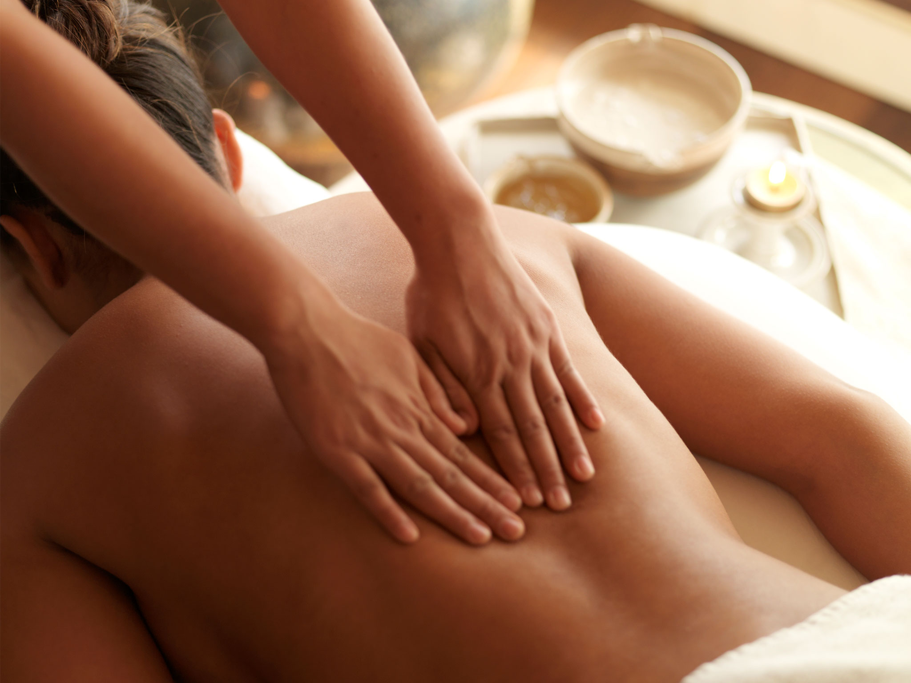

SeaCoast, New Delhi brings the finest and most contemporary Indian Luxury spa experience to the city THE HEALING TOUCH. The launch of The Healing Touch further enhances Seacost's, New Delhi's position as the preferred ... location for urban rejuvenation. Blending ancient Indian wisdom with contemporary therapies,The Healing Touch offers the best in Indian rejuvenation from Indian aromatherapy massages, time-honoured Indian treatments, body scrubs, wraps, facials and salon services. The Healing Touch also promises a retreat for seekers of Yoga and Meditation, where dedicated therapists combine timeless wellness concepts with modern therapeutic wisom, to set a new benchmark in holistic treatments and therapies.
Signature Experiences

- Ayurveda is an alternative medicine system with historical roots in the Indian subcontinent.
- The theory and practice of Ayurveda is pseudoscientific.
- The Indian Medical Association (IMA) characterises the practice of modern medicine by Ayurvedic practitioners as quackery.
- The main classical Ayurveda texts begin with accounts of the transmission of medical knowledge from the gods to sages, and then to human physicians.
- In Sushruta Samhita (Sushruta's Compendium), Sushruta wrote that Dhanvantari, Hindu god of Ayurveda, incarnated himself as a king of Varanasi and taught medicine to a group of physicians, including Sushruta
Indian therapies
- Ayurveda therapies have varied and evolved over more than two millennia.
- Therapies are typically based on complex herbal compounds, minerals and metal substances.
- Ancient Ayurveda texts also taught surgical techniques, including rhinoplasty, kidney stone extractions, sutures, and the extraction of foreign objects.
- Ayurveda has been adapted for Western consumption, notably by Baba Hari Dass in the 1970s and Maharishi Ayurveda in the 1980s.
Spa Indulgences
- Some scholars assert that Ayurveda originated in prehistoric times,and that some of the concepts of Ayurveda have existed from the time of the Indus Valley Civilization or even earlier.
- Ayurveda developed significantly during the Vedic period and later some of the non-Vedic systems such as Buddhism and Jainism also developed medical concepts and practices that appear in the classical Ayurveda texts.
- Doṣa balance is emphasized, and suppressing natural urges is considered unhealthy and claimed to lead to illness.
Body Scrubs and Wraps

- Ayurveda treatises describe three elemental doṣas viz. vāta, pitta and kapha, and state that balance (Skt. sāmyatva) of the doṣas results in health, while imbalance (viṣamatva) results in disease.
- Ayurveda treatises divide medicine into eight canonical components.
- Ayurveda practitioners had developed various medicinal preparations and surgical procedures from at least the beginning of the common era
Yoga & Meditation

- There is no good evidence that Ayurveda is effective for treating any disease.
- Ayurvedic preparations have been found to contain lead, mercury, and arsenic,substances known to be harmful to humans.
- In a 2008 study, close to 21% of U.S. and Indian-manufactured patent Ayurvedic medicines sold through the Internet were found to contain toxic levels of heavy metals, specifically lead, mercury, and arsenic.
- The public health implications of such metallic contaminants in India are unknown.